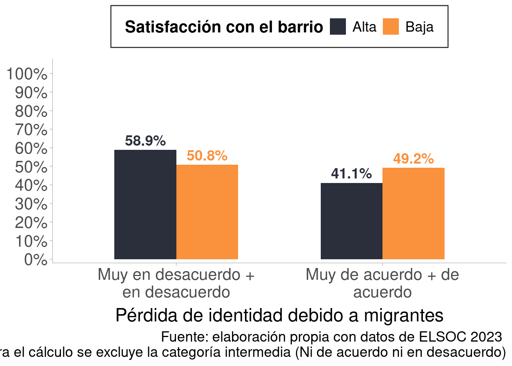

if (! require("pacman")) install.packages("pacman")
pacman::p_load(tidyverse,
sjmisc,
here,
sjlabelled,
sjPlot,
srvyr,
ggdist,
purrr,
rlang,
ggdist)
options(scipen=999)
rm(list = ls())2 Dimensión: Vínculos territoriales
El objetivo de este script es mostrar las decisiones metodológicas para la construcción de los subíndices de migración y vínculos territoriales para la producción de figuras de la nota conceptual del foro II OCS-CEP.
2.1 Data
Se cargan los paquetes que usaremos para trabajar
Se carga la base de datos completa de ELSOC, la cual contiene todas las olas.
db_long <- here("input/data/raw_data/elsoc.RData")
load(db_long)
elsoc <- elsoc_long_2016_20232.2 Univariados
2.2.1 Variables
La dimensión de satisfacción con el barrio se compone a partir de los siguientes ítems:
- Grado de acuerdo: En este barrio es fácil hacer amigos
- Grado de acuerdo: La gente en este barrio es sociable
- Grado de acuerdo: La gente en este barrio es cordial
- Grado de acuerdo: La gente en este barrio es colaboradora
find_var(data = elsoc,"barrio") # corresponde a las variables que comienzan con t03 col.nr var.name
1 91 r13_barrio_01
2 101 r13_barrio_02
3 111 r13_barrio_03
4 121 r13_barrio_04
5 131 r13_barrio_05
6 144 t02_01
7 145 t02_02
8 146 t02_03
9 147 t02_04
10 148 t03_01
11 149 t03_02
12 150 t03_03
13 151 t03_04
14 152 t04_01
15 153 t04_02
16 156 t04_05
17 157 t04_06
18 158 t04_07
19 160 t06_01
20 163 t06_04
21 170 t08
22 174 t10
23 177 t11_03
24 184 t15
25 185 t16
26 186 t17
27 407 d24_02
28 621 m34_03
var.label
1 Confidente 1: Mismo vecindario
2 Confidente 2: Mismo vecindario
3 Confidente 3: Mismo vecindario
4 Confidente 4: Mismo vecindario
5 Confidente 5: Mismo vecindario
6 Grado de acuerdo: Este es el barrio ideal para mi
7 Grado de acuerdo: Me siento integrado/a en este barrio
8 Grado de acuerdo: Me identifico con la gente de este barrio
9 Grado de acuerdo: Este barrio es parte de mi
10 Grado de acuerdo: En este barrio es facil hacer amigos
11 Grado de acuerdo: La gente en este barrio es sociable
12 Grado de acuerdo: La gente en este barrio es cordial
13 Grado de acuerdo: La gente en este barrio es colaboradora
14 Grado de acuerdo: Me agrada el cambio en aspecto del barrio
15 Grado de acuerdo: Encarecimiento de bienes y servicios en el barrio
16 Grado de acuerdo: Abandono de vecinos y/o amigos del barrio
17 Grado de acuerdo: Llegada de residentes desagradables al barrio
18 Grado de acuerdo: Surgimiento de actividades desagradables en el barrio
19 Grado de satisfaccion: Seguridad del barrio
20 Grado de satisfaccion: Limpieza y belleza del barrio
21 Percepcion de evaluacion del barrio
22 Percepcion de seguridad del barrio
23 Frecuencia: Amenazas, insultos u ofensas de vecinos del barrio
24 Nivel de dannio que ha ocurrido en su barrio
25 Justificacion de violencia: Personas dannien bienes en su barrio
26 Justificacion de violencia: Personas dannien bienes en otros barrios
27 Grado de acuerdo: Poderosos indolentes con problemas graves en mi barrio
28 Tiempo residiendo en barrioPor su parte, la variable de migración pregunta por la percepción respecto a que “Chile pierde su identidad con la llegada de migrantes”.
find_var(data = elsoc,"identidad") # corresponde a las r12_03 col.nr var.name
1 81 r12_03
2 432 g02_01
var.label
1 Grado de acuerdo: Chile pierde su identidad con llegada de [PER/HAI/VEN]
2 Grado de acuerdo: Importancia de la identidad de genero2.3 Selección, missings y recodificación
Se crea la base con las variables que conforman los índices satisfacción en el barrio y la variable de migración. Además, se incluyen variables para incluir los factores de expansión a la base de datos. Luego, recodificamos los NA.
elsoc_7 <- elsoc %>%
select(idencuesta, ola, cuestion_mig, ponderador_long_total, segmento, estrato, t03_01, t03_02, t03_03, t03_04, r12_03)
missing_codes <- c(-999, -888, -777, -666)
elsoc_7 <- elsoc_7 %>%
mutate(across(everything(), ~ sjlabelled::set_na(.x, na = missing_codes)))
# check
frq(elsoc_7$r12_03)Grado de acuerdo: Chile pierde su identidad con llegada de [PER/HAI/VEN] (x) <numeric>
# total N=20761 valid N=20398 mean=2.94 sd=1.16
Value | Label | N | Raw % | Valid % | Cum. %
------------------------------------------------------------------------
1 | Totalmente en desacuerdo | 1831 | 8.82 | 8.98 | 8.98
2 | En desacuerdo | 7304 | 35.18 | 35.81 | 44.78
3 | Ni en desacuerdo ni de acuerdo | 3056 | 14.72 | 14.98 | 59.77
4 | De acuerdo | 6599 | 31.79 | 32.35 | 92.12
5 | Totalmente de acuerdo | 1608 | 7.75 | 7.88 | 100.00
<NA> | <NA> | 363 | 1.75 | <NA> | <NA>frq(elsoc_7$t03_01)Grado de acuerdo: En este barrio es facil hacer amigos (x) <numeric>
# total N=20761 valid N=17774 mean=3.37 sd=1.03
Value | Label | N | Raw % | Valid % | Cum. %
------------------------------------------------------------------------
1 | Totalmente en desacuerdo | 677 | 3.26 | 3.81 | 3.81
2 | En desacuerdo | 3653 | 17.60 | 20.55 | 24.36
3 | Ni de acuerdo ni en desacuerdo | 3609 | 17.38 | 20.30 | 44.67
4 | De acuerdo | 8135 | 39.18 | 45.77 | 90.44
5 | Totalmente de acuerdo | 1700 | 8.19 | 9.56 | 100.00
<NA> | <NA> | 2987 | 14.39 | <NA> | <NA>Tanto en la variable de migración como la de vínculos territoriales se puede observar que los NA se recodificaron exitosamente.
2.3.1 Frecuencias de vínculos territoriales
frq(elsoc_7$t03_01)Grado de acuerdo: En este barrio es facil hacer amigos (x) <numeric>
# total N=20761 valid N=17774 mean=3.37 sd=1.03
Value | Label | N | Raw % | Valid % | Cum. %
------------------------------------------------------------------------
1 | Totalmente en desacuerdo | 677 | 3.26 | 3.81 | 3.81
2 | En desacuerdo | 3653 | 17.60 | 20.55 | 24.36
3 | Ni de acuerdo ni en desacuerdo | 3609 | 17.38 | 20.30 | 44.67
4 | De acuerdo | 8135 | 39.18 | 45.77 | 90.44
5 | Totalmente de acuerdo | 1700 | 8.19 | 9.56 | 100.00
<NA> | <NA> | 2987 | 14.39 | <NA> | <NA>frq(elsoc_7$t03_02)Grado de acuerdo: La gente en este barrio es sociable (x) <numeric>
# total N=20761 valid N=17814 mean=3.58 sd=0.93
Value | Label | N | Raw % | Valid % | Cum. %
------------------------------------------------------------------------
1 | Totalmente en desacuerdo | 411 | 1.98 | 2.31 | 2.31
2 | En desacuerdo | 2441 | 11.76 | 13.70 | 16.01
3 | Ni de acuerdo ni en desacuerdo | 3291 | 15.85 | 18.47 | 34.48
4 | De acuerdo | 9750 | 46.96 | 54.73 | 89.22
5 | Totalmente de acuerdo | 1921 | 9.25 | 10.78 | 100.00
<NA> | <NA> | 2947 | 14.19 | <NA> | <NA>frq(elsoc_7$t03_03)Grado de acuerdo: La gente en este barrio es cordial (x) <numeric>
# total N=20761 valid N=17820 mean=3.67 sd=0.88
Value | Label | N | Raw % | Valid % | Cum. %
-------------------------------------------------------------------------
1 | Totalmente en desacuerdo | 336 | 1.62 | 1.89 | 1.89
2 | En desacuerdo | 1889 | 9.10 | 10.60 | 12.49
3 | Ni de acuerdo ni en desacuerdo | 3030 | 14.59 | 17.00 | 29.49
4 | De acuerdo | 10545 | 50.79 | 59.18 | 88.66
5 | Totalmente de acuerdo | 2020 | 9.73 | 11.34 | 100.00
<NA> | <NA> | 2941 | 14.17 | <NA> | <NA>frq(elsoc_7$t03_04)Grado de acuerdo: La gente en este barrio es colaboradora (x) <numeric>
# total N=20761 valid N=17636 mean=3.56 sd=0.96
Value | Label | N | Raw % | Valid % | Cum. %
------------------------------------------------------------------------
1 | Totalmente en desacuerdo | 467 | 2.25 | 2.65 | 2.65
2 | En desacuerdo | 2498 | 12.03 | 14.16 | 16.81
3 | Ni de acuerdo ni en desacuerdo | 3541 | 17.06 | 20.08 | 36.89
4 | De acuerdo | 9000 | 43.35 | 51.03 | 87.92
5 | Totalmente de acuerdo | 2130 | 10.26 | 12.08 | 100.00
<NA> | <NA> | 3125 | 15.05 | <NA> | <NA>En todos los indicadores de satisfacción con el barrio se observa una concentración de aproximadamente del 50% en la categoría “de acuerdo”.
2.3.2 Frecuencias migración
frq(elsoc_7$r12_03)Grado de acuerdo: Chile pierde su identidad con llegada de [PER/HAI/VEN] (x) <numeric>
# total N=20761 valid N=20398 mean=2.94 sd=1.16
Value | Label | N | Raw % | Valid % | Cum. %
------------------------------------------------------------------------
1 | Totalmente en desacuerdo | 1831 | 8.82 | 8.98 | 8.98
2 | En desacuerdo | 7304 | 35.18 | 35.81 | 44.78
3 | Ni en desacuerdo ni de acuerdo | 3056 | 14.72 | 14.98 | 59.77
4 | De acuerdo | 6599 | 31.79 | 32.35 | 92.12
5 | Totalmente de acuerdo | 1608 | 7.75 | 7.88 | 100.00
<NA> | <NA> | 363 | 1.75 | <NA> | <NA>Las personas que están de acuerdo con que los migrantes erosionan la identidad del país es de un %40.23, mientras quellos que están en desacuerdo con esta sentencia hacen el %44.78 (y un %14.98 sería de la categoría neutral).
2.3.3 Índice de satisfacción con el barrio
Ahora, pasamos a crear el índice de la subdimensión
elsoc_7 <- elsoc_7 %>%
mutate(
# Índice promediado
satisfaccion_barrio = rowMeans(
select(., t03_01, t03_02, t03_03, t03_04),
na.rm = TRUE
))
slice(elsoc_7,1:10) %>% select(t03_01, t03_02, t03_03, t03_04, satisfaccion_barrio) #check ok t03_01 t03_02 t03_03 t03_04 satisfaccion_barrio
1 1 3 3 3 2.50
2 5 5 4 5 4.75
3 5 4 3 3 3.75
4 4 3 4 5 4.00
5 5 2 2 4 3.25
6 4 3 4 4 3.75
7 1 1 3 3 2.00
8 3 3 2 2 2.50
9 2 4 3 4 3.25
10 2 2 3 3 2.50Se crea correctamente el índice promediado.
frq(elsoc_7$satisfaccion_barrio)x <numeric>
# total N=20761 valid N=17845 mean=3.54 sd=0.79
Value | N | Raw % | Valid % | Cum. %
---------------------------------------
1.00 | 177 | 0.85 | 0.99 | 0.99
1.25 | 30 | 0.14 | 0.17 | 1.16
1.50 | 69 | 0.33 | 0.39 | 1.55
1.67 | 3 | 0.01 | 0.02 | 1.56
1.75 | 149 | 0.72 | 0.83 | 2.40
2.00 | 787 | 3.79 | 4.41 | 6.81
2.25 | 434 | 2.09 | 2.43 | 9.24
2.33 | 19 | 0.09 | 0.11 | 9.35
2.50 | 809 | 3.90 | 4.53 | 13.88
2.67 | 34 | 0.16 | 0.19 | 14.07
2.75 | 819 | 3.94 | 4.59 | 18.66
3.00 | 1465 | 7.06 | 8.21 | 26.87
3.25 | 1359 | 6.55 | 7.62 | 34.49
3.33 | 41 | 0.20 | 0.23 | 34.72
3.50 | 1999 | 9.63 | 11.20 | 45.92
3.67 | 30 | 0.14 | 0.17 | 46.09
3.75 | 2084 | 10.04 | 11.68 | 57.76
4.00 | 5042 | 24.29 | 28.25 | 86.02
4.25 | 691 | 3.33 | 3.87 | 89.89
4.33 | 8 | 0.04 | 0.04 | 89.94
4.50 | 405 | 1.95 | 2.27 | 92.21
4.67 | 6 | 0.03 | 0.03 | 92.24
4.75 | 377 | 1.82 | 2.11 | 94.35
5.00 | 1008 | 4.86 | 5.65 | 100.00
<NA> | 2916 | 14.05 | <NA> | <NA>Como se puede observar, desde el punto 1 al 3.5 están el %46 de las observaciones, mientras que los valores superiores a 3.5 alojan el 54% restante. Este patrón respalda empíricamente la decisión de establecer un punto de corte en 3.5, distinguiendo entre un grupo bajo (≤ 3.5) y uno alto (> 3). A pesar de que el 3.5 no es el punto intermedio en cuanto a categorías del índice, esto nos asegura una diferencia sustantiva en términos de frecuencia relativa.
# Tabla con el promedio de satisfacción con el barrio por ola
satisfaccion_por_ola <- elsoc_7 %>%
group_by(ola) %>%
summarise(promedio_satisfaccion = mean(satisfaccion_barrio, na.rm = TRUE))
if (!exists("table_format")) table_format <- "simple"
knitr::kable(satisfaccion_por_ola, format = table_format, caption = "Promedio de satisfacción con el barrio por ola")| ola | promedio_satisfaccion |
|---|---|
| 1 | 3.477350 |
| 2 | 3.541008 |
| 3 | 3.550766 |
| 4 | 3.574275 |
| 5 | |
| 6 | 3.560839 |
| 7 | 3.552183 |
A partir de la tabla se refleja que los promedios de satisfacción con el barrio se mantienen estables a través del tiempo (rango 3.48-3.56; \[\mean\] = 3.54; DE 0.03). Esto reafirma que el promedio del índice en todas las olas donde fue medido se encuentra en el punto 3.5, por lo que se decidió por el umbral <= 3.5 / > 3.5 para diferenciar grupos con baja / alta satisfacción con el barrio. Este corte se justifica empíricamente (estabilidad de frecuencias) y por coherencia conceptual con la métrica usada.
# Tabla con el promedio de satisfacción con el barrio por ola y por categorías de r12_03 (pérdida de identidad debido a migrantes)
satisfaccion_por_ola_migracion <- elsoc_7 %>%
group_by(ola, r12_03) %>%
summarise(promedio_satisfaccion_barrio = mean(satisfaccion_barrio, na.rm = TRUE), n = n()) %>%
ungroup()
knitr::kable(satisfaccion_por_ola_migracion, format = table_format, caption = "Promedio de satisfacción con el barrio por ola y categoría de migración (r12_03)")| ola | r12_03 | promedio_satisfaccion_barrio | n |
|---|---|---|---|
| 1 | 1 | 3.405585 | 188 |
| 1 | 2 | 3.475889 | 1107 |
| 1 | 3 | 3.576633 | 399 |
| 1 | 4 | 3.471220 | 1025 |
| 1 | 5 | 3.377883 | 159 |
| 1 | 3.430272 | 49 | |
| 2 | 1 | 3.611014 | 287 |
| 2 | 2 | 3.536325 | 858 |
| 2 | 3 | 3.534257 | 343 |
| 2 | 4 | 3.504179 | 698 |
| 2 | 5 | 3.576596 | 237 |
| 2 | 3.615646 | 50 | |
| 3 | 1 | 3.649687 | 373 |
| 3 | 2 | 3.497038 | 1296 |
| 3 | 3 | 3.616325 | 587 |
| 3 | 4 | 3.502894 | 1125 |
| 3 | 5 | 3.705103 | 259 |
| 3 | 3.626947 | 108 | |
| 4 | 1 | 3.687615 | 364 |
| 4 | 2 | 3.586295 | 1266 |
| 4 | 3 | 3.589263 | 521 |
| 4 | 4 | 3.535615 | 958 |
| 4 | 5 | 3.465251 | 259 |
| 4 | 3.598639 | 49 | |
| 5 | 1 | 201 | |
| 5 | 2 | 1028 | |
| 5 | 3 | 391 | |
| 5 | 4 | 856 | |
| 5 | 5 | 233 | |
| 5 | 31 | ||
| 6 | 1 | 3.606742 | 190 |
| 6 | 2 | 3.559430 | 950 |
| 6 | 3 | 3.597670 | 396 |
| 6 | 4 | 3.560580 | 940 |
| 6 | 5 | 3.451320 | 214 |
| 6 | 3.604167 | 40 | |
| 7 | 1 | 3.600877 | 228 |
| 7 | 2 | 3.539946 | 799 |
| 7 | 3 | 3.605012 | 419 |
| 7 | 4 | 3.540371 | 997 |
| 7 | 5 | 3.522605 | 247 |
| 7 | 3.430556 | 36 |
2.4 Recategorización
2.4.1 Vínculos territoriales
De acuerdo a los resultados descriptivos, vamos a recategorizar ambos índices en el punto corte <= 3.5 como categoría baja y > 3.5 como categoría alta.
# Satisfacción con el barrio con corte en <= 3.5
elsoc_7 <- elsoc_7 %>%
mutate(satisfaccion_barrio2 = case_when(
satisfaccion_barrio >= 1 & satisfaccion_barrio <= 3.5 ~ "Bajo",
satisfaccion_barrio > 3.5 & satisfaccion_barrio <= 5 ~ "Alto",
TRUE ~ NA_character_
))
frq(elsoc_7$satisfaccion_barrio2)x <character>
# total N=20761 valid N=17845 mean=1.46 sd=0.50
Value | N | Raw % | Valid % | Cum. %
---------------------------------------
Alto | 9651 | 46.49 | 54.08 | 54.08
Bajo | 8194 | 39.47 | 45.92 | 100.00
<NA> | 2916 | 14.05 | <NA> | <NA>Como se señaló anteriormente, la concentración de casos en la escala de valores respaldan la decisión de establecer los puntos de corte para un grupo bajo (≤ 3) y uno alto (> 3) de satisfacción con el barrio.
Se reordenan las categorías en Alto y Bajo
elsoc_7$satisfaccion_barrio2 <- factor(elsoc_7$satisfaccion_barrio2, levels = c("Alto", "Bajo"))
frq(elsoc_7$satisfaccion_barrio2)x <categorical>
# total N=20761 valid N=17845 mean=1.46 sd=0.50
Value | N | Raw % | Valid % | Cum. %
---------------------------------------
Alto | 9651 | 46.49 | 54.08 | 54.08
Bajo | 8194 | 39.47 | 45.92 | 100.00
<NA> | 2916 | 14.05 | <NA> | <NA># check
frq(elsoc_7$satisfaccion_barrio2)x <categorical>
# total N=20761 valid N=17845 mean=1.46 sd=0.50
Value | N | Raw % | Valid % | Cum. %
---------------------------------------
Alto | 9651 | 46.49 | 54.08 | 54.08
Bajo | 8194 | 39.47 | 45.92 | 100.00
<NA> | 2916 | 14.05 | <NA> | <NA>2.4.2 Migración
# recodificar r12_03 (pérdida identidad por migrantes) en muy de acuerdo = 1, el resto=0, sacando los NAs
elsoc_7 <- elsoc_7 %>%
mutate(perdida_identidad4 = case_when(
r12_03 == 5 ~ "Muy de acuerdo",
r12_03 %in% c(1, 2, 3, 4) ~ "Otro",
TRUE ~ NA_character_
))
frq(elsoc_7$perdida_identidad4) # okx <character>
# total N=20761 valid N=20398 mean=1.92 sd=0.27
Value | N | Raw % | Valid % | Cum. %
-------------------------------------------------
Muy de acuerdo | 1608 | 7.75 | 7.88 | 7.88
Otro | 18790 | 90.51 | 92.12 | 100.00
<NA> | 363 | 1.75 | <NA> | <NA># recodificar r12_03 (pérdida identidad por migrantes) en muy en desacuerdo = 1, el resto=0, sacando los NAs
elsoc_7 <- elsoc_7 %>%
mutate(perdida_identidad5 = case_when(
r12_03 == 1 ~ "Muy en desacuerdo",
r12_03 %in% c(2, 3, 4, 5) ~ "Otro",
TRUE ~ NA_character_
))
frq(elsoc_7$perdida_identidad5) # okx <character>
# total N=20761 valid N=20398 mean=1.91 sd=0.29
Value | N | Raw % | Valid % | Cum. %
----------------------------------------------------
Muy en desacuerdo | 1831 | 8.82 | 8.98 | 8.98
Otro | 18567 | 89.43 | 91.02 | 100.00
<NA> | 363 | 1.75 | <NA> | <NA>Al examinar la distribución de las respuestas para las variables de migración, se observa que las categorías extremas concentran una fracción bastante reducida de las observaciones: alrededor de 8% para “Muy de acuerdo” y 9% en “Muy en desacuerdo”. En contraste, más del 90% se concentran en las cuatro categorías restantes. Esta asimetría sugiere que, si bien es posible representar gráficamente los extremos frente al resto para enfatizar la presencia de posiciones polarizadas, la interpretación debe considerar que la mayor parte de la variación se concentra en la categoría agregada “Otro”. Por ello, dependiendo del objetivo analítico, puede ser preferible distinguir dos grupos (De acuerdo y En desacuerdo), lo que permite capturar con mayor claridad la disposición de las respuestas para fines visuales.
Tomando en cuenta lo anterior, la variable de migración que alude a la pérdida de identidad debido a migrantes se recodifica en tres categorías, colapsando las categorías “Totalmente en desacuerdo” con “En desacuerdo”, y “De acuerdo” con “Totalmente de acuerdo”, mientras que la categoría neutra se categoriza como “Otro”.
elsoc_7 <- elsoc_7 %>%
mutate(perdida_identidad2 = case_when(
r12_03 >= 1 & r12_03 <= 2 ~ "Muy en desacuerdo + en desacuerdo",
r12_03 >= 2 & r12_03 <= 3 ~ "Otro",
r12_03 > 3 & r12_03 <= 5 ~ "Muy de acuerdo + de acuerdo",
TRUE ~ NA_character_
))
elsoc_7$perdida_identidad2 <- factor(elsoc_7$perdida_identidad2, levels = c("Muy en desacuerdo + en desacuerdo", "Otro", "Muy de acuerdo + de acuerdo")) #check
frq(elsoc_7$perdida_identidad2)x <categorical>
# total N=20761 valid N=20398 mean=1.95 sd=0.92
Value | N | Raw % | Valid % | Cum. %
-------------------------------------------------------------------
Muy en desacuerdo + en desacuerdo | 9135 | 44.00 | 44.78 | 44.78
Otro | 3056 | 14.72 | 14.98 | 59.77
Muy de acuerdo + de acuerdo | 8207 | 39.53 | 40.23 | 100.00
<NA> | 363 | 1.75 | <NA> | <NA>Se recategoriza exitosamente la variable de migración.
2.5 Cruces
tabla_cruzada <- elsoc_7 %>%
filter(!is.na(satisfaccion_barrio2) & !is.na(perdida_identidad2) & perdida_identidad2 == "Muy de acuerdo + de acuerdo") %>%
group_by(ola, satisfaccion_barrio2) %>%
summarise(n = n()) %>%
group_by(ola) %>%
mutate(total_ola = sum(n),
porcentaje = (n / total_ola) * 100) %>%
ungroup()
knitr::kable(tabla_cruzada, format = "markdown", caption = "Tabla cruzada de satisfaccion con el barrio y pérdida de identidad (Muy de acuerdo + de acuerdo) por ola - porcentaje dentro de ola")| ola | satisfaccion_barrio2 | n | total_ola | porcentaje |
|---|---|---|---|---|
| 1 | Alto | 588 | 1184 | 49.66216 |
| 1 | Bajo | 596 | 1184 | 50.33784 |
| 2 | Alto | 513 | 933 | 54.98392 |
| 2 | Bajo | 420 | 933 | 45.01608 |
| 3 | Alto | 743 | 1381 | 53.80159 |
| 3 | Bajo | 638 | 1381 | 46.19841 |
| 4 | Alto | 660 | 1216 | 54.27632 |
| 4 | Bajo | 556 | 1216 | 45.72368 |
| 6 | Alto | 601 | 1092 | 55.03663 |
| 6 | Bajo | 491 | 1092 | 44.96337 |
| 7 | Alto | 662 | 1244 | 53.21543 |
| 7 | Bajo | 582 | 1244 | 46.78457 |
tabla_cruzada2 <- elsoc_7 %>%
filter(!is.na(satisfaccion_barrio2) & !is.na(perdida_identidad2) & perdida_identidad2 == "Muy en desacuerdo + en desacuerdo") %>%
group_by(ola, satisfaccion_barrio2) %>%
summarise(n = n()) %>%
group_by(ola) %>%
mutate(total_ola = sum(n),
porcentaje = (n / total_ola) * 100) %>%
ungroup()
knitr::kable(tabla_cruzada2, format = "markdown", caption = "Tabla cruzada de satisfacción con el barrio y pérdida de identidad (Muy en desacuerdo + en desacuerdo) por ola - porcentaje dentro de ola")| ola | satisfaccion_barrio2 | n | total_ola | porcentaje |
|---|---|---|---|---|
| 1 | Alto | 632 | 1294 | 48.84080 |
| 1 | Bajo | 662 | 1294 | 51.15920 |
| 2 | Alto | 619 | 1144 | 54.10839 |
| 2 | Bajo | 525 | 1144 | 45.89161 |
| 3 | Alto | 834 | 1667 | 50.02999 |
| 3 | Bajo | 833 | 1667 | 49.97001 |
| 4 | Alto | 929 | 1628 | 57.06388 |
| 4 | Bajo | 699 | 1628 | 42.93612 |
| 6 | Alto | 609 | 1067 | 57.07591 |
| 6 | Bajo | 458 | 1067 | 42.92409 |
| 7 | Alto | 559 | 1027 | 54.43038 |
| 7 | Bajo | 468 | 1027 | 45.56962 |
2.6 Gŕafico: Satisfacción con el barrio y pérdida de identidad
b <- elsoc_7_pond %>%
select(ola, satisfaccion_barrio, perdida_identidad2) %>%
filter(perdida_identidad2!="Otro") %>%
mutate(satisfaccion_barrio = case_when(
satisfaccion_barrio <= 3.5 ~ "Baja",
satisfaccion_barrio > 3.5 ~ "Alta"
),
perdida_identidad2 = forcats::fct_relabel(
perdida_identidad2, ~ str_wrap(.x, 20))) %>%
tidyr::drop_na() %>%
filter(ola == last(ola)) %>%
group_by(perdida_identidad2, satisfaccion_barrio) %>%
survey_count(vartype = NULL) %>%
group_by(satisfaccion_barrio) %>%
mutate(
prop = 100 * n / sum(n), # porcentaje dentro de cada ola
label = scales::percent(prop/100, accuracy = 0.1)
) %>%
ggplot(aes(x = perdida_identidad2, y = prop, fill = satisfaccion_barrio)) +
geom_col(position = position_dodge(width = 0.6), width = 0.6) +
geom_text(
aes(label = label, color = satisfaccion_barrio), # color igual a la serie
position = position_dodge(width = 0.6),
vjust = -0.4, size = 5, fontface = "bold", show.legend = FALSE
) +
scale_fill_manual(
name = "Satisfacción con el barrio",
values = c("Baja" = "#F9913D", "Alta" = "#2B2F3C")
) +
scale_color_manual( # mismo esquema para el texto
values = c("Baja" = "#F9913D", "Alta" = "#2B2F3C")
) +
scale_y_continuous(
labels = function(p){paste0(p, "%")},
limits = c(0,100),
breaks = seq(0,100, by = 10),
expand = expansion(mult = c(0.02, 0.08)) # deja aire arriba para las etiquetas
) +
labs(
x = "Pérdida de identidad debido a migrantes",
y = NULL,
caption = "Fuente: elaboración propia con datos de ELSOC 2023 \n Nota: Para el cálculo se excluye la categoría intermedia (Ni de acuerdo ni en desacuerdo)"
) +
theme_ggdist() +
theme(
plot.title = element_text(size = 24, face = "bold", hjust = 0.5),
plot.subtitle = element_text(size = 16, face = "italic", hjust = 0.5),
plot.caption = element_text(size = 14),
axis.title.x = element_text(size = 18),
axis.title.y = element_text(size = 18),
axis.text.x = element_text(size = 16),
axis.text.y = element_text(size = 16),
legend.title = element_text(size = 16, face = "bold"),
legend.text = element_text(size = 14),
legend.box.background = element_rect(color = "grey20", fill = "white", linewidth = 0.5),
legend.background = element_rect(fill = "white", color = NA),
legend.margin = margin(t = 6, r = 8, b = 6, l = 8),
legend.box.margin = margin(t = 6, r = 6, b = 6, l = 6),
legend.position = "top",
legend.direction = "horizontal"
) +
guides(
color = guide_legend(
title.position = "top",
label.position = "right",
nrow = 1, byrow = TRUE,
keywidth = unit(14, "pt"),
keyheight = unit(10, "pt")
)
)
Guardamos los gráficos